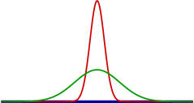

Parrondo’s paradox¶
Abstract
Parrondo’s paradox is a combination of games which behaves quite counterintuively. Beyond its curious behavior, it provides a simple illustration of a physical system, the so-called flashing ratchet. After giving some background information on Parrondo’s paradox, we will explore several approaches to a numerical implementation. An object-oriented approach will finally allow us to study in some detail various aspects of Parrondo’s paradox. Readers less interested in the programming aspects can skip that part and after having read the introduction can go directly to the last section.
Literature:
In Parrondo’s paradox, a flashing ratchet is simulated by two games representing the situations with the potential switched on and off. In both cases, the player will loose on average, thereby mimicking a tilted potential with an average motion to the left as explained above. The question to be explored in the following is how the situation changes for the player when one switches between the two games.
Parrondo’s paradox serves as an illustration of Brownian ratchets by means of appropriately combining two games where tossing a coin represents the random Brownian motion.
Brownian motion of particles leads to a broadening of their distribution. An initially sharp distribution (red curve) will be significantly broader (green curve) after some time.
If the potential is slightly tilted to the left, the distribution will not only broaden but also move to the left in the course of time.
A specific type of a Brownian ratchet is the so-called flashing ratchet, where during certain periods of time a sawtooth potential (see figure below) is switched on. If the sawtooth potential is permanently switched on, the diffusive motion will not have a preferential direction. If the potential is tilted to the left, particles on average will move to the left as was the case in the absence of an external potential.
However, in the operational mode of a flashing ratchet, when the sawtooth potential is switched on and off appropriately, one can observe an average motion to the right.
Tossing a coin¶
Let us try out the creation of random numbers. The numbers are generated in a way that they are equally distributed between 0 and 1. For the simplest fair game, we would define a threshold of 0.5 where the player wins if the random number is below the threshold and looses otherwise.
Note on Python
Indentation is used as a syntax markup. As long as the code is indented relative to the for loop statement (first line above), the code is repeated within the loop. Once the indented block terminates, Python knows that the following code is no longer part of the loop. The same indentation concept holds for example for if/else constructs and function and class definitions, all of which we will encounter below. Indentation needs to be consistent. Make it a rule to always indent by 4 spaces per indentation level.
Let us now toss some coins in a fair game. Since the outcomes are random, you should not expect to win in exactly half of the cases even though this may happen. For comparison, you might try the same game with a real coin.
Game A¶
Now we take a look at the individual games which are part of Parrondo’s paradox and start with game A. The rule is simple: We win if the random number is below \(0.5-\epsilon\), otherwise we loose. For \(\epsilon>0\), we have to face it: We will loose in the long run. For our numerical runs, let us use \(\epsilon=0.005\).
We are not interested in the absolute amount of money which we have after a certain number of games. Only changes are important, how much money have we won or lost? Therefore, it is fine to start without any money at the beginning.
Running the following code several times, you will notice that in some cases you are lucky and win money for some time. However, if you continue to play, you will end up loosing money. In order to show this, we have to play the game often. Setting the number of games to 100000, the code will run for a couple of seconds. You can try a different number of games by changing the value of ngames, but if ngames is too large, the code might need a long time to terminate.
Game B¶
The rules of the second game are slightly more complicated because they depend on the amount of money in our possession at the time the game is played. There are two rules:
- Our money is not a multiple of \(m\): We win if the random number is below \(\frac{3}{4}-\epsilon\). Otherwise we loose. This sounds extremely good…
- Our money is a multiple of \(m\): We win only if the random number is below \(\frac{1}{10}-\epsilon\). Otherwise we loose. A pretty bad situation…
But: For \(\epsilon>0\), we still loose in the long run. While this statement can be rigorously proven, we will simply try it out numerically.
\(m\) is an integer which we choose to be 3 in the following.
Note on Python
The character % represents the modulo operator. In the previous code the if-branch is chosen if money is not divisible by m without rest while the else-branch is chosen if the division is possible without rest.
Combining two loosing games¶
We now play a series of games alternating between two games A and two games B in a row: A-A-B-B-A-A-B-B-…
What do you expect? Will we loose again? Let’s try it out.
Unless you have been extremely unlucky, the combination of two loosing game should yield a winning situation.
Object-oriented approach¶
By putting together the codes from games A and B, we ended up with code which is not optimal in two respects. Chaining the if/else constructs results in not very readable code. Furthermore, we have repeated three times the code for tossing a coin. The three code segments only differ by the winning threshold. Instead of repeating code, it is better to follow the DRY principle: Don’t Repeat Yourself.
Important hint
In the following we will present an object-oriented approach to Parrondo’s paradox which will facilitate our further analysis of the paradox. Feel free to skip this section if you are not interested in the details of the code but be sure to execute the code cells so that the various classes and their methods are available later on. Executing cells in this section will not yield any visible results.
The object-oriented approach will present a few advantages for exploring Parrondo’s paradox. New sequences of games A and B can be defined in a simple way. An instance of a game remembers the parameters \(\epsilon\) and \(m\) for which it was defined as well as the money in our possession during the game. Several instances of games can be played in parallel, each instance having automatically its own money and game parameters.
The class Game defined in the following code knows how to toss a coin and to determine a win or loss as a function of the winning threshold. It also knows how to perform a series of plays. However, a single play has to be defined by classes derived from Game.
The class ParrondoGame is derived from the parent class Game and defines the games A and B. However, it only serves as a parent class for the classes defined below which are actually able to do the playing. The class ParrondoGame defines the values used above for the parameters \(\epsilon\) and \(m\) as default values. These values need to be specified only if other values are desired.
The class GameA plays game A of Parrondo’s paradox.
Correspondingly, the class GameB plays game B of Parrondo’s paradox.
The class GameAABB plays a the sequence of two games A and two games B as specified above for Parrondo’s paradox.
For comparison, we also define a class GameABRandom which chooses at random between games A and B.
The preceding two classes can be used as templates for the definition of other sequences of games A and B.
Exploring Parrondo’s paradox¶
Let us first repeat our numerical experiments carried out at the beginning, but now by using the object-oriented code.
If everything works as expected, the blue and green curves corresponding to game A and B, respectively, should end up at a negative value while the red curve corresponding to a games A-A-B-B-… should end up at a positive value.
However, single realizations of a game can be treacherous as you might have seen already above by running the simulations several times. Therefore, we now evaluate the average and standard deviation for 50 realizations of a game where the coin is tossed only 10000 times.
Do the averages come out with the expected sign?
Histogram seems to require at least Sage 6.5
Suggestions for further numerical experiments¶
- What happens if the number of A and B games is changed in the sequence?
- What happens for random switching between games A and B?
- What happens when parameters like \(\epsilon\) and \(m\) are changed?